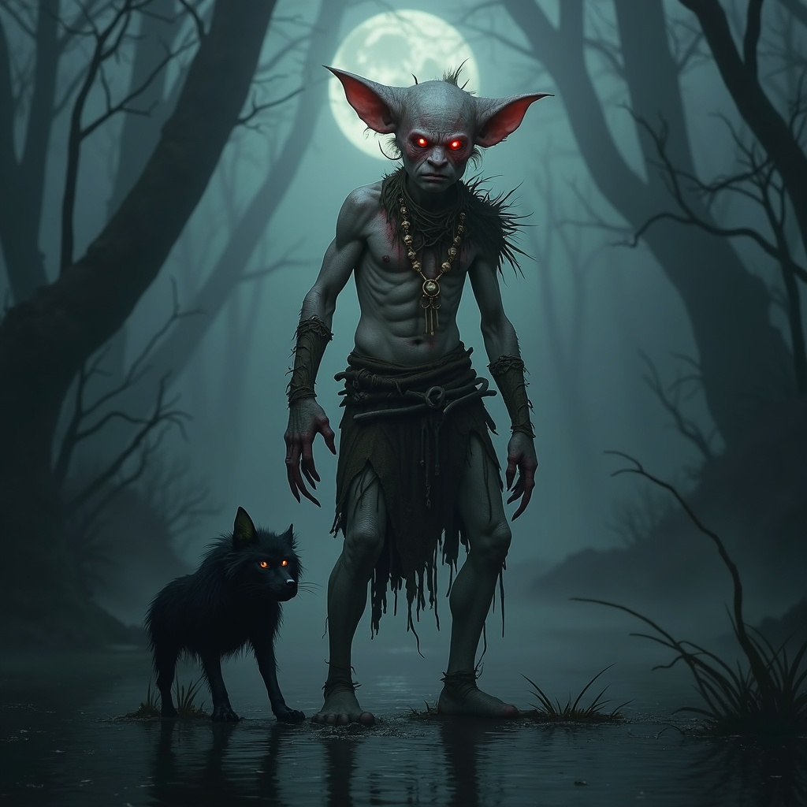

Physical Description
Blacksong Goblins are strikingly pale—skin as ghostly as swamp fog—and their eyes glow a vivid, unnerving
red, like crimson coals against white snow. Their wiry frames lend themselves to stealth and agility,
but don’t let their lean forms deceive you: in combat, they move with deadly speed and uncanny
precision. Their contrast—white flesh, red gaze—often unnerves outsiders, reinforcing their reputation
as spectral hunters born of dark superstition.

In the wetland-forest expanse surrounding the Blacksong River, a mysterious and ancient tribe has
emerged—known simply as the Blacksong Goblins. Appearing nearly a millennium ago, their origins are
whispered in fearful superstition: some say they rose from the river’s black depths, others believe they
slipped through the fragile Veil between realms. Though no records chronicle their arrival, they swiftly
established themselves as a warlike and insular people—proud of their isolation and guardians of arcane
taboos.

Heritage
They are neither elf nor common goblin: the Blacksong Goblins seemingly sprang into being about 1,000
years ago. Legends hold that they were formed as a spiritual response to the land’s mourning:
manifestations of the river’s ancient grief, or spirits trapped between planes drawn into mortal form by
cosmic disruption.